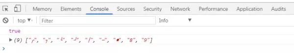
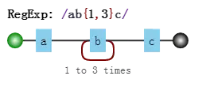

正则表达式学习
前言
本人平时学习及收集内容，欢迎参入一起讨论。
内容
- 正则表达式字符匹配攻略
- 正则表达式位置匹配攻略
- 正则表达式括号的作用
- 正则表达式回溯法原理
- 正则表达式的拆分
- 正则表达式的构建
- 正则表达式编程
一、正则表达式字符匹配攻略
正则表达式是匹配模式，要么匹配字符，要么匹配位置。请记住这句话。
然而关于正则如何匹配字符的学习，大部分人都觉得这块比较杂乱。
毕竟元字符太多了，看起来没有系统性，不好记。本章就解决这个问题。
内容包括：
- 两种模糊匹配
- 字符组
- 量词
- 分支结构
- 案例分析
1.1 两种模糊匹配
如果与此同时只有精确切尔西是没多大意义的，比如/hello/，也只能切尔西字符串中的“hello”这个子串。
var regex = /hello/;
console.log( regex.test("hello") );
// => true
2
3
正则表达式之所以强大，是因为其能实现模糊匹配。
而模糊切尔西，有两个方向上的“模糊”；横向模糊和纵身模糊。
横向模糊匹配
横向模糊指的是，一个正则可切匹配的字符串的长度不是固定的，可以是多种情况的。
其实实现的方式是使用量词。譬如{m,n}，表示连续出现最少 m 次，最多 n 次。
比如/ab{2,5}c/表示匹配这样一个字符串：第一个字符是“a”，接下来是 2 到 6 个字符串“b”，最后是字符“c”，测试如下：
var regex = /ab{2,5}c/g;
var string = "abc abbc abbbc abbbbc abbbbbc abbbbbbc";
console.log( string.match(regex) );
// => ["abbc", "abbbc", "abbbbc", "abbbbbc"]
2
3
4
5
注意：案例中用的正则/ab{2,5}c/g，后面多了g，它是正则的一个修饰符。表示全局匹配，即在目标字符串中按顺序找到满足切尔西模式的所有子串，强调的是“所有”，而不只是“第一个”。g 是单词 global 的首字母。
纵向模糊匹配
纵向模糊指的是，一个正则匹配的字符串，具体到某一位字符时，它可以不是某个确定的字符，可以有多种可能。
其实的方式是使用字符组。譬如[abc]，表示该字符是可以字符“a”、"b"、"c"中的任何一个。
比如/a[123]b/可以匹配如下三种字符串："a1b"、"a2b"、"a3b"。测试如下：
var regex = /a[123]b/g;
var string = "a0b a1b a2b a3b a4b";
console.log( string.match(regex) );
// => ["a1b", "a2b", "a3b"]
2
3
4
以上就是本章讲的主体内容，只要掌握横向和纵向模糊匹配，就能解决很大部分正则匹配问题。
接下来的内容就是展开说了，如果对此都比熟悉的话，可以跳过，直接看本章案例那节。
1.2 字符组
需要强调的是，虽叫字符组（字符类），但只是其中一个字符，例如[abc]，表示匹配一个字符，它可以是"a"、"b"、"c"之一。
范围表示法
如果字符组里的字符特别多的话，怎么办？可以使用范围表示法。
比如[123456abcdefGHIJKLM]，可以写成[1-6a-fG-M]。用连字符-来省略和简写。
因为连字符有特殊用途，那么要匹配"a"、"-"、"z"这三者中任意一个字符，该怎么做呢？
不能写成[a-z]，因为其表示小写字符中的任何一个字符。
可以写成如下的方式：[-az]或[az-]或[a\-z]。即要么放在开头，要么放在结尾，要么转义。总之不会让引擎认为是范围表示法就行了。
排除字符组
纵向模糊匹配，还有一种情形就是，某位字符可以是任何东西，但就不能是"a"、"b"、"c"。
此时就是排除字符组（反义字符组）的概念。例如[^abc]，表示是一个除"a"、"b"、"c"之外的任意一个字符。字符组的第一位放^（脱字符），表示求反的概念。
当然，也有相应的范围表示法。
常见的简写形式
有了字符组的概念后，一些常见的符号我们也就理解了。因为它们都是系统自带的简写形式。
\d就是[0-9]。表示是一位数字。记忆方式：其英文是 digit（数字）。\D就是[^0-9]。表示除数字外的任意字符。\w就是[0-9a-zA-Z_]。表示数字、大小写字母和下划线。记忆方式：w 是 word 的简写，也称单词字符。\W是[^0-9a-za-z_]。非单词字符。\s是[ \t\v\n\r\f]。表示空白符，包括空格、水平制表符、垂直制表符、换行符、回车符、换页符。记忆方式：s 是 space character 的首字母。\S是[^ \t\v\n\r\f]。 非空白符。.就是[^\n\r\u2028\u2029]。通配符，表示几乎任意字符。换行符、回车符、行分隔符和段分隔符除外。记忆方式：想想省略号...中的每个点，都可以理解成占位符，表示任何类似的东西。
如果要匹配任意字符怎么办？可以使用[\d\D]、[\w\W]、[\s\S]和[^]中任何的一个。
1.3 量词
量词也称重复。掌握{m,n}的准确含义后，只需要记住一些简写形式。
简写形式
{m,}表示至少出现 m 次。{m}等价于{m,m}，表示出现 m 次。?等价于{0,1}，表示出现或者不出现。记忆方式：问号的意思表示，有吗？+等价于{1,}，表示出现至少一次。记忆方式：加号是追加的意思，得先有一个，然后才考虑追加。*等价于{0,}，表示出现任意次，有可能不出现。记忆方式：看看天上的星星，可能一颗没有，可能零散有几颗，可能数也数不过来。
贪婪匹配和惰性匹配
看如下的例子：
var regex = /\d{2,5}/g;
var string = "123 1234 12345 123456";
console.log( string.match(regex) );
// => ["123", "1234", "12345", "12345"]
2
3
4
其中正则/\d{2,5}/，表示数字连续出现 2 到 5 次。会匹配 2 位、3 位、4 位、5 位连续数字。
但是其是贪婪的，它会尽可能多的匹配。你能给我 6 个，我就要 5 个。你能给我 3 个，我就 3 要个。反正只要在能力范围内，越多越好。
我们知道有时贪婪不是一件好事。而惰性切尔西，就是尽可能少的匹配：
var regex = /\d{2,5}?/g;
var string = "123 1234 12345 123456";
console.log( string.match(regex) );
// => ["12", "12", "34", "12", "34", "12", "34", "56"]
2
3
4
其中/\d{2,5}?/表示，虽然 2 到 5 次都行，当 2 个就够的时候，就不在往下尝试了。
通过在量词后面加个问号就能实现惰性匹配，因此所有惰性匹配情形如下：
{m,n}? {m,}? ?? +? *?
对惰性匹配的记忆方式是：量词后面加个问号，问一问你知足了吗，你很贪婪吗？
1.4 多选分支
一个模式可以实现横向和纵向模糊匹配。而多选分支可以支持多个子模式任选其一。
具体形式如下：(p1|p2|p3)，其中 p1、p2 和 p3 是子模式，用|（管道符）分隔，表示其中任何之一。
例如要匹配"good"和"nice"可以使用/good|nice/。测试如下：
var regex = /good|nice/g;
var string = "good idea, nice try.";
console.log( string.match(regex) );
// => ["good", "nice"]
2
3
4
但有个事实我们应该注意，比如我用/good|goodbye/，去匹配"goodbye"字符串时，结果是"good"：
var regex = /good|goodbye/g;
var string = "goodbye";
console.log( string.match(regex) );
// => ["good"]
2
3
4
但有个事实我们应该注意，比如我用/good|goodbye/，去匹配"goodbye"字符串时，结果是"good"：
var regex = /goodbye|good/g;
var string = "goodbye";
console.log( string.match(regex) );
// => ["goodbye"]
2
3
4
而把正则改成/goodbye|good/，结果是：
var regex = /goodbye|good/g;
var string = "goodbye";
console.log( string.match(regex) );
// => ["goodbye"]
2
3
4
也就是说，分支结构也是惰性的，即当前面的匹配上了，后面的就不再尝试了。
1.3 案例分析
匹配字符，无非就是字符组、量词和分支结构的组合使用罢了。
下面找几个例子演练一下（其中，每个正则并不是只有唯一写法）：
匹配 16 进制颜色值
要求匹配：
#ffbbad #Fc01DF #FFF #ffE
分析：
表示一个 16 进制字符，可以用字符组[0-9a-fA-F]。
其中字符可以出现 3 或 6 次，需要是用量词和分支结构。
使用分支结构时，需要注意顺序。
正则如下：
var regex = /#([0-9a-fA-F]{6}|[0-9a-fA-F]{3})/g;
var string = "#ffbbad #Fc01DF #FFF #ffE";
console.log( string.match(regex) );
// => ["#ffbbad", "#Fc01DF", "#FFF", "#ffE"]
2
3
4
匹配时间
以 24 小时制为例。
要求匹配：
23:59 02:07
分析：
共 4 位数字，第一位数字可以为[0-2]。
当第 1 位为 2 时，第 2 位可以为[0-3]，其他情况时，第 2 位为[0-9]。
第 3 位数字为[0-5]，第 4 位为[0-9]
正则如下：
var regex = /^([01][0-9]|[2][0-3]):[0-5][0-9]$/;
console.log( regex.test("23:59") );
console.log( regex.test("02:07") );
// => true
// => true
2
3
4
5
如果也要求匹配 7:9，也就是说时分前面的 0 可以省略。
此时正则变成：
var regex = /^(0?[0-9]|1[0-9]|[2][0-3]):(0?[0-9]|[1-5][0-9])$/;
console.log( regex.test("23:59") );
console.log( regex.test("02:07") );
console.log( regex.test("7:9") );
// => true
// => true
// => true
2
3
4
5
6
7
匹配日期
比如 yyyy-mm-dd 格式为例。
要求匹配：
2017-06-10
分析：
年，四位数字即可，可用[0-9]{4}。
月，共 12 个月，分两种情况 01、02、……、09 和 10、11、12，可用(0[1-9]|1[0-2])。
日，最大 31 天，可用(0[1-9]|[12][0-9]|3[01])。
正则如下：
var regex = /^[0-9]{4}-(0[1-9]|1[0-2])-(0[1-9]|[12][0-9]|3[01])$/;
console.log( regex.test("2017-06-10") );
// => true
2
3
window 操作系统文件路径
要求匹配：
F:\study\javascript\regex\regular expression.pdf F:\study\javascript\regex
F:\study\javascript F:\
分析：
整体模式是: 盘符:\文件夹\文件夹\文件夹\
其中匹配 F:\，需要使用[a-zA-Z]:\\，其中盘符不区分大小写，注意\字符需要转义。
文件名或者文件夹名，不能包含一些特殊字符，此时我们需要排除字符组[^\\:*<>|"?\r\n/]来表示合法字符。另外不能为空名，至少有一个字符，也就是要使用量词+。因此匹配“文件夹\”，可用[^\\:*<>|"?\r\n/]+\\。
另外“文件夹\”，可以出现任意次。也就是([^\\:*<>|"?\r\n/]+\\)*。其中括号提供子表达式。
路径的最后一部分可以是“文件夹”，没有\，因此需要添加([^\\:_<>|"?\r\n/]+)?。
最后拼接成了一个看起来比较复杂的正则：
var regex = /^[a-zA-Z]:\\([^\\:*<>|"?\r\n/]+\\)*([^\\:*<>|"?\r\n/]+)?$/;
console.log( regex.test("F:\\study\\javascript\\regex\\regular expression.pdf") );
console.log( regex.test("F:\\study\\javascript\\regex\\") );
console.log( regex.test("F:\\study\\javascript") );
console.log( regex.test("F:\\") );
// => true
// => true
// => true
// => true
2
3
4
5
6
7
8
9
其中，JS 中字符串表示\时，也要转义。
匹配 id
要求从
提取出 id="container"。
可能最开始想到的正则是：
var regex = /id=".*"/
var string = '<div id="container" class="main"></div>';
console.log(string.match(regex)[0]);
// => id="container" class="main"
2
3
4
因为.是通配符，本身就匹配双引号的，而量词*又是贪婪的，当遇到 container 后面双引号时，不会停下来，会继续匹配，直到遇到最后一个双引号为止。
解决之道，可以使用惰性匹配：
var regex = /id=".*?"/
var string = '<div id="container" class="main"></div>';
console.log(string.match(regex)[0]);
// => id="container"
2
3
4
当然，这样也会有个问题。效率比较低，因为其匹配原理会涉及到“回溯”这个概念（这里也只是顺便提一下，第四章会详细说明）。可以优化如下：
var regex = /id="[^"]*"/
var string = '<div id="container" class="main"></div>';
console.log(string.match(regex)[0]);
// => id="container"
2
3
4
二、正则表达式位置匹配攻略
正则表达式是匹配模式，要么匹配字符，要么匹配位置。请记住这句话。
然而大部分人学习正则时，对于匹配位置的重视程度没有那么高。
本章讲讲正则匹配位置的总总。
内容包括：
- 什么是位置？
- 如何匹配位置？
- 位置的特性
- 几个应用实例分析
2.1 什么是位置？
位置是相邻字符之间的位置。比如，下图中箭头所指的地方：

2.2 如何匹配位置？
在 ES5 中，共有 6 个锚字符：
^$\b\B(?=p)(?!p)
var result = "hello".replace(/^|$/g, '#');
console.log(result);
// => "#hello#"
2
3
^和$
^(脱字符) 匹配开头，在多行匹配中行开头。$(美元符号)匹配结尾，在多行匹配中匹配行结尾。
比如我们把字符串的开头和结尾用“#”替换（位置可以替换成字符的！）：
var result = "hello".replace(/^|$/g, '#');
console.log(result);
// => "#hello#"
2
3
多行匹配模式时，二者是行的概念，这个需要我们的注意：
var result = "I\nlove\njavascript".replace(/^|$/gm, '#');
console.log(result);
/*
#I#
#love#
#javascript#
*/
2
3
4
5
6
7
\b 和\B
\b 是单词边界，具体就是\w 和\W 之间的位置，也包括\w 和^之间的位置，也包括\w和\$之间的位置。
比如一个文件名是"[JS] Lesson_01.mp4"中的\b，如下：
var result = "[JS] Lesson_01.mp4".replace(/\b/g, '#');
console.log(result);
// => "[#JS#] #Lesson_01#.#mp4#"
2
3
为什么是这样呢？这需要仔细看看。
首先，我们知道，\w 是字符组[0-9a-zA-Z_]的简写形式，即\w是字母数字或者下划线的中任何一个字符。而\W 是排除字符组[^0-9a-za-z_]的简写形式，即\W 是\w 以外的任何一个字符。
此时我们可以看看"[#JS#] #Lesson_01#.#mp4#"中的每一个"#"，是怎么来的。
- 第一个“#”，两边是“[”与“J”，是
\W与\w的位置。 - 第二个"#"，两边是"S"与"]"，也就是
\w和\W之间的位置。 - 第三个"#"，两边是空格与"L"，也就是
\W和\w之间的位置。 - 第四个"#"，两边是"1"与"."，也就是
\w和\W之间的位置。 - 第五个"#"，两边是"."与"m"，也就是
\W和\w之间的位置。 - 第六个"#"，其对应的位置是结尾，但其前面的字符"4"是
\w，即\w和\$之间的位置。
知道了\b 的概念后，那么\B 也就相对好理解了。
\B 就是\b的反面的意思，非单词边界。例如在字符串中所有位置中，扣掉\b，剩下的都是\B 的。
具体说来就是\w 与\w、\W 与\W、^与\W，\W 与\$之间的位置。
比如上面的例子，把所有\B 替换成"#"：
var result = "[JS] Lesson_01.mp4".replace(/\B/g, '#');
console.log(result);
// => "#[J#S]# L#e#s#s#o#n#_#0#1.m#p#4"
2
3
(?=p)和(?!p)
(?=p)，其中p是一个子模式，即p前面的位置。
比如(?=l)，表示'l'字符前面的位置，例如：
var result = "hello".replace(/(?=l)/g, '#');
console.log(result);
// => "he#l#lo"
2
3
而(?!p)就是(?=p)的反面意思，比如：
var result = "hello".replace(/(?!l)/g, '#');
console.log(result);
// => "#h#ell#o#"
2
3
4
二者的学名分别是 positive lookahead 和 negative lookahead。
中文翻译分别是正向先行断言和负向先行断言。
ES6 中，还支持 positive lookbehind 和 negative lookbehind。
具体是(?<=p)和(?<!p)。
也有书上把这四个东西，翻译成环视，即看看右边或看看左边。
但一般书上，没有很好强调这四者是个位置。
比如(?=p)，一般都理解成：要求接下来的字符与p匹配，但不能包括p的那些字符。
而在本人看来(?=p)就与^一样好理解，就是p前面的那个位置。
2.3 位置的特性
对于位置的理解，我们可以理解成空字符""。
比如"hello"字符串等价于如下的形式：
"hello" == "" + "h" + "" + "e" + "" + "l" + "" + "l" + "o" + "";
也等价于
"hello" == "" + "" + "hello"
因此，把/^hello$/写成/^^hello$$$/，是没有任何问题的：
var result = /^^hello$$$/.test("hello");
console.log(result);
// => true
2
3
甚至可以写成更复杂的:
var result = /(?=he)^^he(?=\w)llo$\b\b$/.test("hello");
console.log(result);
// => true
2
3
也就是说字符之间的位置，可以写成多个。
把位置理解空字符，是对位置非常有效的理解方式。
4.4 相关案例
不匹配任何东西的正则
/.^/
此正则要求只有一个字符，但该字符后面是开头。
数字的千位分隔表示法
比如把"12345678"，变成"12,345,678"。
可见是需要把相应的位置替换成","。
思路是什么呢？
- 弄出最后一个逗号
使用(?=\d{3}$)就可以做到：
var result = "12345678".replace(/(?=\d{3}$)/g, ',')
console.log(result);
// => "12345,678"
2
3
- 弄出所有的逗号
因为逗号出现的位置，要求后面 3 个数字一组，也就是\d{3}至少出现一次。
此时可以使用量词+：
var result = "12345678".replace(/(?=(\d{3})+$)/g, ',')
console.log(result);
// => "12,345,678"
2
3
- 匹配其余案例
写完正则后，要多验证几个案例，此时我们会发现问题：
var result = "123456789".replace(/(?=(\d{3})+$)/g, ',')
console.log(result);
// => ",123,456,789"
2
3
因为上面的正则，仅仅表示把从结尾向前数，一但是 3 的倍数，就把其前面的位置替换成逗号。因此才会出现这个问题。
怎么解决呢？我们要求匹配的到这个位置不能是开头。
我们知道匹配开头可以使用^，但要求这个位置不是开头怎么办？
easy，(?!^)，你想到了吗？测试如下：
var string1 = "12345678",
string2 = "123456789";
reg = /(?!^)(?=(\d{3})+$)/g;
var result = string1.replace(reg, ',')
console.log(result);
// => "12,345,678"
result = string2.replace(reg, ',');
console.log(result);
// => "123,456,789"
2
3
4
5
6
7
8
9
10
11
- 支持其他形式
如果要把"12345678 123456789"替换成"12,345,678 123,456,789"。
此时我们需要修改正则，把里面的开头^和结尾\$，替换成\b：
var string = "12345678 123456789",
reg = /(?!\b)(?=(\d{3})+\b)/g;
var result = string.replace(reg, ',')
console.log(result);
// => "12,345,678 123,456,789"
2
3
4
5
6
其中(?!\b)怎么理解呢？
要求当前是一个位置，但不是\b前面的位置，其实(?!\b)说的就是\B。
因此最终正则变成了：/\B(?=(\d{3})+\b)/g。
验证密码问题
密码长度 6-12 位，由数字、小写字符和大写字母组成，但必须至少包括 2 种字符。
此题，如果写成多个正则来判断，比较容易。但要写成一个正则就比较困难。
那么，我们就来挑战一下。看看我们对位置的理解是否深刻。
- 简化
不考虑“但必须至少包括 2 种字符”这一条件。我们可以容易写出：
var reg = /^[0-9A-Za-z]{6,12}$/;
- 判断是否包含有某一种字符
假设，要求的必须包含数字，怎么办？此时我们可以使用(?=.\*[0-9])来做。
因此正则变成：
var reg = /(?=.*[0-9])^[0-9A-Za-z]{6,12}$/;
- 同时包含具体两种字符
比如同时包含数字和小写字母，可以用(?=._[0-9])(?=._[a-z])来做。
因此正则变成：
var reg = /(?=.*[0-9])(?=.*[a-z])^[0-9A-Za-z]{6,12}$/;
- 解答
我们可以把原题变成下列几种情况之一：
- 同时包含数字和小写字母
- 同时包含数字和大写字母
- 同时包含小写字母和大写字母
- 同时包含数字、小写字母和大写字母
以上的 4 种情况是或的关系（实际上，可以不用第 4 条）。
最终答案是：
var reg = /((?=.*[0-9])(?=.*[a-z])|(?=.*[0-9])(?=.*[A-Z])|(?=.*[a-z])(?=.*[A-Z]))^[0-9A-Za-z]{6,12}$/;
console.log( reg.test("1234567") ); // false 全是数字
console.log( reg.test("abcdef") ); // false 全是小写字母
console.log( reg.test("ABCDEFGH") ); // false 全是大写字母
console.log( reg.test("ab23C") ); // false 不足6位
console.log( reg.test("ABCDEF234") ); // true 大写字母和数字
console.log( reg.test("abcdEF234") ); // true 三者都有
2
3
4
5
6
7
- 解惑
上面的正则看起来比较复杂，只要理解了第二步，其余就全部理解了。
/(?=._[0-9])^[0-9A-Za-z]{6,12}\$/
对于这个正则，我们只需要弄明白(?=._[0-9])^即可。
分开来看就是(?=.\_[0-9])和^。
表示开头前面还有个位置（当然也是开头，即同一个位置，想想之前的空字符类比）。
(?=.\_[0-9])表示该位置后面的字符匹配.\*[0-9]，即，有任何多个任意字符，后面再跟个数字。
翻译成大白话，就是接下来的字符，必须包含个数字。
- 另外一种解法
“至少包含两种字符”的意思就是说，不能全部都是数字，也不能全部都是小写字母，也不能全部都是大写字母。
那么要求“不能全部都是数字”，怎么做呢？(?!p)出马！
对应的正则是：
var reg = /(?!^[0-9]{6,12}$)^[0-9A-Za-z]{6,12}$/;
三种“都不能”呢？
最终答案是：
var reg = /(?!^[0-9]{6,12}$)(?!^[a-z]{6,12}$)(?!^[A-Z]{6,12}$)^[0-9A-Za-z]{6,12}$/;
console.log( reg.test("1234567") ); // false 全是数字
console.log( reg.test("abcdef") ); // false 全是小写字母
console.log( reg.test("ABCDEFGH") ); // false 全是大写字母
console.log( reg.test("ab23C") ); // false 不足6位
console.log( reg.test("ABCDEF234") ); // true 大写字母和数字
console.log( reg.test("abcdEF234") ); // true 三者都有
2
3
4
5
6
7
三、正则表达式括号的作用
不管哪门语言中都有括号。正则表达式也是一门语言，而括号的存在使这门语言更为强大。
对括号的使用是否得心应手，是衡量对正则的掌握水平的一个侧面标准。
括号的作用，其实三言两语就能说明白，括号提供了分组，便于我们引用它。
引用某个分组，会有两种情形：在 JavaScript 里引用它，在正则表达式里引用它。
本章内容虽相对简单，但我也要写长点。
内容包括：
- 分组和分支结构
- 捕获分组
- 反向引用
- 非捕获分组
- 相关案例
3.1 分组和分支结构
这二者是括号最直觉的作用，也是最原始的功能。
分组
我们知道/a+/匹配连续出现的"a"，而要匹配连续出现的"ab"时，需要使用/(ab)+/。
其中括号是提供分组功能，使量词+作用于"ab"这个整体，测试如下：
var regex = /(ab)+/g;
var string = "ababa abbb ababab";
console.log( string.match(regex) );
// => ["abab", "ab", "ababab"]
2
3
4
分支结构
而在多选分支结构(p1|p2)中，此处括号的作用也是不言而喻的，提供了子表达式的所有可能。
比如，要匹配如下的字符串：
I love JavaScript I love Regular Expression
可以使用正则：
var regex = /^I love (JavaScript|Regular Expression)$/;
console.log( regex.test("I love JavaScript") );
console.log( regex.test("I love Regular Expression") );
// => true
// => true
2
3
4
5
如果去掉正则中的括号，即/^I love JavaScript|Regular Expression$/，匹配字符串是"I love JavaScript"和"Regular Expression"，当然这不是我们想要的。
3.2 引用分组
这是括号一个重要的作用，有了它，我们就可以进行数据提取，以及更强大的替换操作。
而要使用它带来的好处，必须配合使用实现环境的API。
以日期为例。假设格式是yyyy-mm-dd的，我们可以先写一个简单的正则：
var regex = /\d{4}-\d{2}-\d{2}/;
然后再修改成括号版的：
var regex = /(\d{4})-(\d{2})-(\d{2})/;
为什么要使用这个正则呢？
提取数据
比如提取出年、月、日，可以这么做：
var regex = /(\d{4})-(\d{2})-(\d{2})/;
var string = "2017-06-12";
console.log( string.match(regex) );
// => ["2017-06-12", "2017", "06", "12", index: 0, input: "2017-06-12"]
2
3
4
match返回的一个数组，第一个元素是整体匹配结果，然后是各个分组（括号里）匹配的内容，然后是匹配下标，最后是输入的文本。（注意：如果正则是否有修饰符g，match返回的数组格式是不一样的）。
另外也可以使用正则对象的exec方法：
var regex = /(\d{4})-(\d{2})-(\d{2})/;
var string = "2017-06-12";
console.log( regex.exec(string) );
// => ["2017-06-12", "2017", "06", "12", index: 0, input: "2017-06-12"]
2
3
4
同时，也可以使用构造函数的全局属性$1至$9来获取：
var regex = /(\d{4})-(\d{2})-(\d{2})/;
var string = "2017-06-12";
regex.test(string); // 正则操作即可，例如
//regex.exec(string);
//string.match(regex);
console.log(RegExp.$1); // "2017"
console.log(RegExp.$2); // "06"
console.log(RegExp.$3); // "12"
2
3
4
5
6
7
8
9
10
替换
比如，想把yyyy-mm-dd格式，替换成mm/dd/yyyy怎么做？
var regex = /(\d{4})-(\d{2})-(\d{2})/;
var string = "2017-06-12";
var result = string.replace(regex, "$2/$3/$1");
console.log(result);
// => "06/12/2017"
2
3
4
5
其中replace中的，第二个参数里用$1、$2、$3指代相应的分组。等价于如下的形式：
var regex = /(\d{4})-(\d{2})-(\d{2})/;
var string = "2017-06-12";
var result = string.replace(regex, function() {
return RegExp.$2 + "/" + RegExp.$3 + "/" + RegExp.$1;
});
console.log(result);
// => "06/12/2017"
2
3
4
5
6
7
也等价于：
var regex = /(\d{4})-(\d{2})-(\d{2})/;
var string = "2017-06-12";
var result = string.replace(regex, function(match, year, month, day) {
return month + "/" + day + "/" + year;
});
console.log(result);
// => "06/12/2017"
2
3
4
5
6
7
3.3 反向引用
除了使用相应API来引用分组，也可以在正则本身里引用分组。但只能引用之前出现的分组，即反向引用。
还是以日期为例。
比如要写一个正则支持匹配如下三种格式：
2016-06-12
2016/06/12
2016.06.12
最先可能想到的正则是:
var regex = /\d{4}(-|\/|\.)\d{2}(-|\/|\.)\d{2}/;
var string1 = "2017-06-12";
var string2 = "2017/06/12";
var string3 = "2017.06.12";
var string4 = "2016-06/12";
console.log( regex.test(string1) ); // true
console.log( regex.test(string2) ); // true
console.log( regex.test(string3) ); // true
console.log( regex.test(string4) ); // true
2
3
4
5
6
7
8
9
其中/和.需要转义。虽然匹配了要求的情况，但也匹配"2016-06/12"这样的数据。
假设我们想要求分割符前后一致怎么办？此时需要使用反向引用：
var regex = /\d{4}(-|\/|\.)\d{2}\1\d{2}/;
var string1 = "2017-06-12";
var string2 = "2017/06/12";
var string3 = "2017.06.12";
var string4 = "2016-06/12";
console.log( regex.test(string1) ); // true
console.log( regex.test(string2) ); // true
console.log( regex.test(string3) ); // true
console.log( regex.test(string4) ); // false
2
3
4
5
6
7
8
9
注意里面的\1，表示的引用之前的那个分组(-|\/|\.)。不管它匹配到什么（比如-），\1都匹配那个同样的具体某个字符。
我们知道了\1的含义后，那么\2和\3的概念也就理解了，即分别指代第二个和第三个分组。
看到这里，此时，恐怕你会有三个问题。
括号嵌套怎么办？
以左括号（开括号）为准。比如：
var regex = /^((\d)(\d(\d)))\1\2\3\4$/;
var string = "1231231233";
console.log( regex.test(string) ); // true
console.log( RegExp.$1 ); // 123
console.log( RegExp.$2 ); // 1
console.log( RegExp.$3 ); // 23
console.log( RegExp.$4 ); // 3
2
3
4
5
6
7
我们可以看看这个正则匹配模式：
- 第一个字符是数字，比如说1，
- 第二个字符是数字，比如说2，
- 第三个字符是数字，比如说3，
- 接下来的是
\1，是第一个分组内容，那么看第一个开括号对应的分组是什么，是123， - 接下来的是
\2，找到第2个开括号，对应的分组，匹配的内容是1， - 接下来的是
\3，找到第3个开括号，对应的分组，匹配的内容是23， - 最后的是
\4，找到第3个开括号，对应的分组，匹配的内容是3。
这个问题，估计仔细看一下，就该明白了。
\10表示什么呢？
var regex = /(1)(2)(3)(4)(5)(6)(7)(8)(9)(#) \10+/;
var string = "123456789# ######"
console.log( regex.test(string) );
// => true
2
3
4
引用不存在的分组会怎样？
因为反向引用，是引用前面的分组，但我们在正则里引用了不存在的分组时，此时正则不会报错，只是匹配反向引用的字符本身。例如\2，就匹配"\2"。注意"\2"表示对"2"进行了转意。
var regex = /\1\2\3\4\5\6\7\8\9/;
console.log( regex.test("\1\2\3\4\5\6\7\8\9") );
console.log( "\1\2\3\4\5\6\7\8\9".split("") );
2
3
chrome浏览器打印的结果：

3.4 非捕获分组
之前文中出现的分组，都会捕获它们匹配到的数据，以便后续引用，因此也称他们是捕获型分组。
如果只想要括号最原始的功能，但不会引用它，即，既不在API里引用，也不在正则里反向引用。此时可以使用非捕获分组(?:p)，例如本文第一个例子可以修改为：
var regex = /(?:ab)+/g;
var string = "ababa abbb ababab";
console.log( string.match(regex) );
// => ["abab", "ab", "ababab"]
2
3
4
3.5 相关案例
- 字符串trim方法模拟
- 将每个单词的首字母转换为大写
- 驼峰化
- 中划线化
- html转义和反转义
- 匹配成对标签
字符串trim方法模拟
trim方法是去掉字符串的开头和结尾的空白符。有两种思路去做。
第一种，匹配到开头和结尾的空白符，然后替换成空字符。如：
function trim(str) {
return str.replace(/^\s+|\s+$/g, '');
}
console.log( trim(" foobar ") );
// => "foobar"
2
3
4
5
第二种，匹配整个字符串，然后用引用来提取出相应的数据：
function trim(str) {
return str.replace(/^\s*(.*?)\s*$/g, "$1");
}
console.log( trim(" foobar ") );
// => "foobar"
2
3
4
5
这里使用了惰性匹配*?，不然也会匹配最后一个空格之前的所有空格的。
当然，前者效率高。
将每个单词的首字母转换为大写
function titleize(str) {
return str.toLowerCase().replace(/(?:^|\s)\w/g, function(c) {
return c.toUpperCase();
});
}
console.log( titleize('my name is epeli') );
// => "My Name Is Epeli"
2
3
4
5
6
7
思路是找到每个单词的首字母，当然这里不使用非捕获匹配也是可以的。
驼峰化
function camelize(str) {
return str.replace(/[-_\s]+(.)?/g, function(match, c) {
return c ? c.toUpperCase() : '';
});
}
console.log( camelize('-moz-transform') );
// => "MozTransform"
2
3
4
5
6
7
其中分组(.)表示首字母。单词的界定是，前面的字符可以是多个连字符、下划线以及空白符。正则后面的?的目的，是为了应对str尾部的字符可能不是单词字符，比如str是'-moz-transform '。
中划线化
function dasherize(str) {
return str.replace(/([A-Z])/g, '-$1').replace(/[-_\s]+/g, '-').toLowerCase();
}
console.log( dasherize('MozTransform') );
// => "-moz-transform"
2
3
4
5
驼峰化的逆过程。
html转义和反转义
// 将HTML特殊字符转换成等值的实体
function escapeHTML(str) {
var escapeChars = {
'¢' : 'cent',
'£' : 'pound',
'¥' : 'yen',
'€': 'euro',
'©' :'copy',
'®' : 'reg',
'<' : 'lt',
'>' : 'gt',
'"' : 'quot',
'&' : 'amp',
'\'' : '#39'
};
return str.replace(new RegExp('[' + Object.keys(escapeChars).join('') +']', 'g'), function(match) {
return '&' + escapeChars[match] + ';';
});
}
console.log( escapeHTML('<div>Blah blah blah</div>') );
// => "<div>Blah blah blah</div>";
2
3
4
5
6
7
8
9
10
11
12
13
14
15
16
17
18
19
20
21
其中使用了用构造函数生成的正则，然后替换相应的格式就行了，这个跟本章没多大关系。
倒是它的逆过程，使用了括号，以便提供引用，也很简单，如下：
// 实体字符转换为等值的HTML。
function unescapeHTML(str) {
var htmlEntities = {
nbsp: ' ',
cent: '¢',
pound: '£',
yen: '¥',
euro: '€',
copy: '©',
reg: '®',
lt: '<',
gt: '>',
quot: '"',
amp: '&',
apos: '\''
};
return str.replace(/\&([^;]+);/g, function(match, key) {
if (key in htmlEntities) {
return htmlEntities[key];
}
return match;
});
}
console.log( unescapeHTML('<div>Blah blah blah</div>') );
// => "<div>Blah blah blah</div>"
2
3
4
5
6
7
8
9
10
11
12
13
14
15
16
17
18
19
20
21
22
23
24
25
通过key获取相应的分组引用，然后作为对象的键。
匹配成对标签
regular expression laoyao bye bye
不匹配：
wrong!<p></p>
匹配一个开标签，可以使用正则<[^>]+>，
匹配一个闭标签，可以使用<\/[^>]+>，
但是要求匹配成对标签，那就需要使用反向引用，如：
var regex = /<([^>]+)>[\d\D]*<\/\1>/;
var string1 = "<title>regular expression</title>";
var string2 = "<p>laoyao bye bye</p>";
var string3 = "<title>wrong!</p>";
console.log( regex.test(string1) ); // true
console.log( regex.test(string2) ); // true
console.log( regex.test(string3) ); // false
2
3
4
5
6
7
其中开标签<[^>]+>改成<([^>]+)>，使用括号的目的是为了后面使用反向引用，而提供分组。闭标签使用了反向引用，<\/\1>。
另外[\d\D]的意思是，这个字符是数字或者不是数字，因此，也就是匹配任意字符的意思。
四、正则表达式回溯法原理
学习正则表达式，是需要懂点儿匹配原理的。
而研究匹配原理时，有两个字出现的频率比较高：“回溯”。
听起来挺高大上，确实还有很多人对此不明不白的。
因此，本章就简单扼要地说清楚回溯到底是什么东西。
内容包括：
- 没有回溯的匹配
- 有回溯的匹配
- 常见的回溯形式
4.1 没有回溯的匹配
假设我们的正则是/ab{1,3}c/，其可视化形式是：

而当目标字符串是"abbbc"时，就没有所谓的“回溯”。其匹配过程是：
4.2 有回溯的匹配
4.3 常见的回溯形式
五、正则表达式的拆分
对于一门语言的掌握程度怎么样，可以有两个角度来衡量：读和写。
不仅要求自己能解决问题，还要看懂别人的解决方案。代码是这样，正则表达式也是这样。
正则这门语言跟其他语言有一点不同，它通常就是一大堆字符，而没有所谓“语句”的概念。
如何能正确地把一大串正则拆分成一块一块的，成为了破解“天书”的关键。
本章就解决这一问题，内容包括：
- 结构和操作符
- 注意要点
- 案例分析
六、正则表达式的构建
七、正则表达式编程
参考资料
联系作者
平凡世界，贵在坚持。